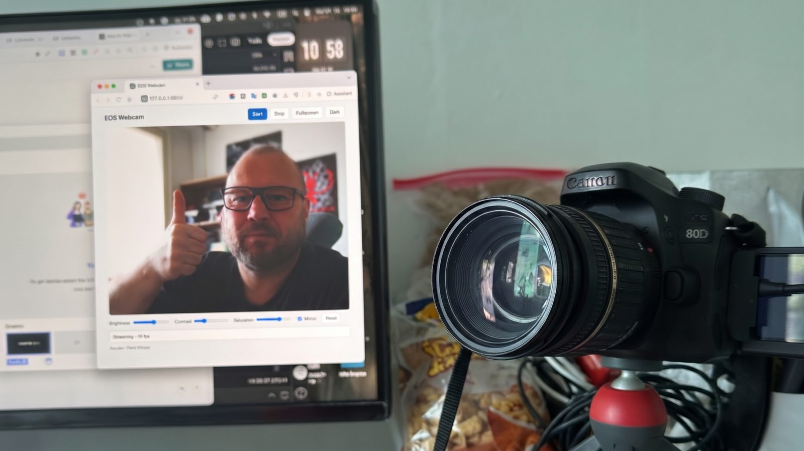
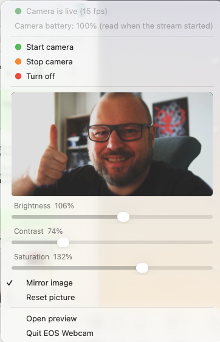

Canon's own webcam app freezes on macOS 26. This setup replaces it with one small menu bar app and a free virtual camera, so the camera shows up in Zoom, Meet or Detail like any other camera.
EOS Webcam works with cameras that gphoto2 can read live view from over USB. Pick your camera to check. The list comes from the camera table in libgphoto2 2.5.34, the version Homebrew installs; only the EOS 80D has been tested with this app.
Not listed? Install gphoto2, connect the camera and run gphoto2 --capture-movie=3s. If it saves a short movie.mjpg, the camera works.

The 80D sends its live view over Mini-USB, but macOS only lists a camera in call apps when a signed camera extension provides it. Canon's EOS Webcam Utility is that extension, and on current macOS it freezes.
Writing your own extension needs a paid Apple Developer account. The way around it is to borrow an extension that is already signed, from an open-source recording app whose virtual camera can be driven from the command line.
Click a step to see what it does and what it passes on. Click the background to reset.
A Mac with Apple silicon and macOS 14 or later, Homebrew, and a Canon camera that gphoto2 can read live view from. It was built and tested with an EOS 80D on a Mac mini running macOS 26.5.
The installer adds Node, gphoto2 and the virtual camera engine if they are missing, then builds the EOS Webcam app on your Mac and puts it in Applications. The engine is the open-source app Isocast 0.0.10, downloaded from its GitHub release and checked against a known checksum.
curl -fsSL https://raw.githubusercontent.com/kotyzap/EOS-Webcam-via-USB-Mini/main/install.command | zshEOS-Webcam-Installer.zip from the latest release and double-click install.command. macOS blocks it the first time: allow it under System Settings → Privacy & Security → Open Anyway.
Everything is in the menu bar icon. The lens colour shows the state, and each menu item carries the colour it leads to.
The menu also shows the camera battery level, read when the stream starts, and opens a preview page at http://127.0.0.1:8809. Close EOS Utility and similar apps first, since only one program can hold the camera.
The menu shows a live preview of exactly what call apps get, with sliders for brightness, contrast and saturation. Mirror image flips the picture for apps that show you the wrong way round; some apps, like Zoom, only flip your own view, while this flips what everyone sees. Reset picture puts the sliders back to 100%. The preview page has the same controls, the two stay in step, and the settings survive a restart.
The picture is the camera's USB live view, so it tops out at 960×640 and about 15 fps. It is cropped to 16:9 and scaled to 720p. For full 1080p, the camera's Mini-HDMI output with an HDMI capture dongle is the better route and needs no software at all.
The virtual camera engine is alpha software, and it cannot open a network stream directly yet. That is why the script serves a bare page at /view, which the engine renders as a web page source.
All 265 models listed with USB live view in libgphoto2 2.5.34. Only the Canon EOS 80D has been tested with EOS Webcam.
Digital IXUS 180, Digital IXUS 400, Digital IXUS 430, Digital IXUS 500, Digital IXUS II, Digital IXUS IIs, Digital IXUS v3, Digital PowerShot SX730HS, EOS 1D C, EOS 1D Mark IV, EOS 1D X, EOS 1D X MarkII, EOS 1D X MarkIII, EOS 5D Mark II, EOS 5D Mark III, EOS 5D Mark IV, EOS 5DS, EOS 5DS R, EOS 5Rm2, EOS 6D, EOS 6d Mark II, EOS 7D, EOS 7D MarkII, EOS 40D, EOS 50D, EOS 60D, EOS 70D, EOS 77D, EOS 80D, EOS 90D, EOS 100D, EOS 200D, EOS 250D, EOS 450D, EOS 500D, EOS 550D, EOS 600D, EOS 650D, EOS 700D, EOS 750D, EOS 760D, EOS 800D, EOS 850D, EOS 1000D, EOS 1100D, EOS 1200D, EOS 1300D, EOS 1500D, EOS 2000D, EOS 4000D, EOS Kiss X2, EOS Kiss X3, EOS M, EOS M2, EOS M3, EOS M5, EOS M6, EOS M6 Mark II, EOS M10, EOS M50, EOS M50m2, EOS M100, EOS M200, EOS R, EOS R1, EOS R3, EOS R5, EOS R5 C, EOS R6, EOS R6 Mark III, EOS R6m2, EOS R7, EOS R8, EOS R10, EOS R50, EOS R50 V, EOS R100, EOS Rebel T1i, EOS Rebel T6, EOS Rebel T7i, EOS Rebel T8i, EOS Rebel XSi, EOS RP, PowerShot A60 (PTP), PowerShot A70 (PTP), PowerShot A75, PowerShot A80 (PTP), PowerShot A85, PowerShot A95, PowerShot A300, PowerShot A310, PowerShot A400, PowerShot A460, PowerShot A510, PowerShot A520, PowerShot A620, PowerShot A640, PowerShot A650IS, PowerShot G3, PowerShot G3 X, PowerShot G5, PowerShot G5X, Powershot G6, PowerShot G7, PowerShot G7 X, PowerShot G7 X Mark II, PowerShot G7 X Mark III, PowerShot G9, PowerShot G9 X Mark II, PowerShot G10, PowerShot S1 IS, PowerShot S2 IS, PowerShot S3 IS, PowerShot S5 IS, PowerShot S50, Powershot S60, Powershot S70, PowerShot S80, PowerShot S230, PowerShot S400, PowerShot S410, PowerShot S500, PowerShot SD100, PowerShot SD110, PowerShot SD500, PowerShot SX70 HS, Powershot SX100 IS, PowerShot SX110 IS, PowerShot SX530 HS, PowerShot SX540 HS, PowerShot SX600 HS, PowerShot SX740 HS, Rebel T2i, Rebel T3, Rebel T3i, Rebel T4i, SX 620HS, SX 720HS
Coolpix B700, Coolpix P1000, Coolpix P1100, Coolpix S9700, D3s, D3x, D4, D4s, D5, D6, D90, D300s, D500, D600, D610, D700, D750, D780, D800, D800E, D810, D810A, D850, D3200, D3300, D3400, D3500, D5000, D5100, D5200, D5300, D5500, D5600, D7000, D7100, D7200, D7500, Df, P950, Z5, Z6, Z6 III, Z6_2, Z7, Z7_2, Z8, Z9, Z30, Z50, Z50_2, Zf, Zfc
A6700 (PC Control), Alpha-A7 III (PC Control), Alpha-A7 IV (PC Control), Alpha-A7III (Control), Alpha-A7r II (Control), Alpha-A7r III (PC Control), Alpha-A7S (Control), Alpha-A7S II (Control), Alpha-A9 (Control), Alpha-A68 (Control), Alpha-A77 M2 (Control), Alpha-A99 M2 (Control), Alpha-A5100 (Control), Alpha-A6100 (PC Control), Alpha-A6300 (Control), Alpha-A6500 (Control), Alpha-A6600 (PC Control), Alpha-RX1R II (Control), Alpha-RX10M4 (Control), DSC RX0 II (PC Control), DSC-A7r IV (Control), DSC-A7S III (Control), DSC-QX30U, DSC-RX0 (PC Control), DSC-RX10M3 (Control), DSC-RX100M4, DSC-RX100M5A (PC Control), DSC-RX100M6 (PC Control), DSC-RX100M7 (PC Control), ILCE-1 (Control), ILCE-1M2 (PC Control), ILCE-7C (Control), ILCE-7M2 (Control), ILCE-7RM3A (PC Control), ILCE-7RM4A (PC Control), ILCE-7RM5 (PC Control), ILCE-9M3 (Control), ILCE-6400 (PC Control), ILME-FX3 (PC Control), ILX-LR1 (PC Control), ZV-1 (PC Control), ZV-E10 (Control)
Fujifilm GFX100, Fujifilm GFX100 II, Fujifilm GFX 100S, Fujifilm GFX 100S (2nd), Fujifilm X100V, Fujifilm X-E3, Fujifilm X-H1, Fujifilm X-H2, Fujifilm X-M5, Fujifilm X-Pro2, Fujifilm X-Pro3, Fujifilm X-S10, Fujifilm X-T1, Fujifilm X-T2, Fujifilm X-T3, Fujifilm X-T4, Fujifilm X-T5, Fujifilm X-T30, GFX 50 R, GFX 50 S
E-M1, E-M1 Mark II, E-M1 MII, E-M5 Mark II, OM-1, OM-1MarkII
Q3, SL3, SL (Typ 601)
DC-GH5, DMC-GX8
fp, fp L